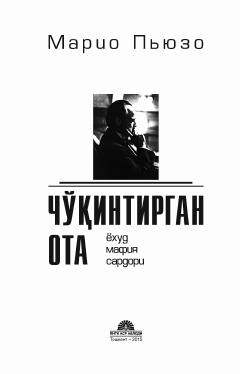

COMafiya olami va Don Korleone taqdiri haqidagi mashhur roman.
Ushbu asar Amerika va Sitsiliya mafiyasi olamining ichki sirlari, boylikka bo'lgan hirs va insoniy illatlar haqida hikoya qiladi. Asosiy qahramon Don Korleone atrofida kechadigan voqealar adolat va qasos tushunchalarini o'ziga xos tarzda ochib beradi.